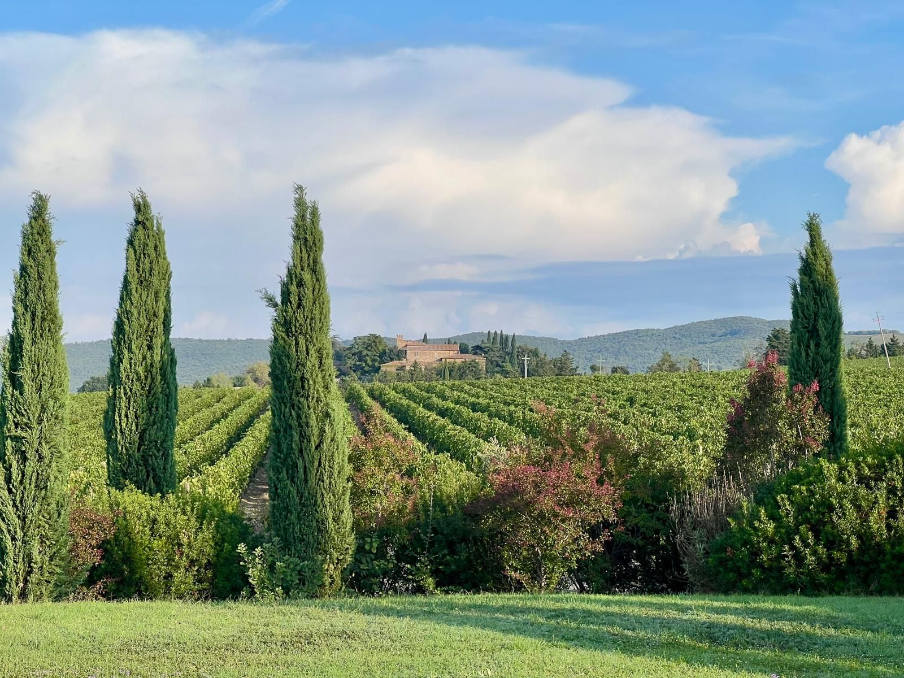

Casa Rossa · Montalcino
Everything arranged, so you can simply enjoy it.
Wine
Montalcino is the home of Brunello, one of the world's great wines, and Casa Rossa sits among some of its finest vineyards. So we have a wine expert on hand.
Stephanie Barnet leads the high-end client relationships for an exclusive wine members' club in London. She can arrange wine tours of the estates, private tastings and other wine experiences around your stay, whether that is your first taste of Brunello or a search for a particular vintage.
Tell us what you enjoy and Stephanie will plan the rest.

placeholder: wine tasting photo or video to addServices
We have lived here for over twenty-five years. Tell us what you would like and we will arrange it.
Everything below can be arranged by us, but must be booked before you arrive. The best guides, chefs and instructors are in demand all summer and book up quickly, so the earlier you let us know, the better your chances.
The house is overseen by Pat and Valeria. It will be immaculate when you arrive, and refreshed midweek with clean sheets and towels. Extra changes are available on request.
Luxury cars and vans with local, English-speaking drivers, to and from Casa Rossa or anywhere in Italy. We do recommend a four-wheel drive for the estate's white roads.
We have eaten at all of them. Ask for our list and we will book your table.
For an intimate dinner, or simply a night off from cooking.
Visits to some of Montalcino's finest estates, with a long gourmet lunch.
Learn fresh pasta or a local speciality, then eat what you have made, with a glass of Brunello.
Hundreds of kilometres of trails cross the Val d'Orcia, and many end at a wonderful restaurant where we can book lunch.
Bikes and e-bikes to hire for your stay, or a guided ride through the vineyards and along the white roads, with a stop for lunch on the way.
Private yoga classes or one-to-one training sessions, at the house, by the pool or out among the olive trees.
Rides through the vineyards and woodland around Montalcino, with local stables and guides.
Guided tours of Siena and beyond, or a day at a beach club on the coast with a seafood lunch.
We can help with the local pharmacy, a doctor or anything else you need during your stay.